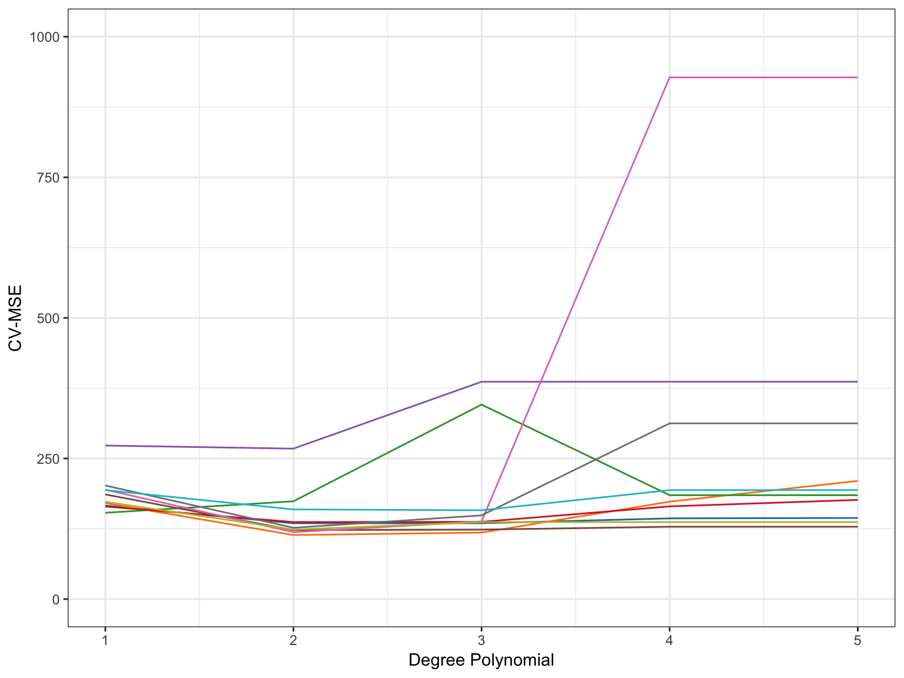

In the previous set of notes, we modeled a nonlinear relationship between bluegill age and length, using data on bluegills.csv. Based on evaluating a series of nested \(F\)-tests, we adopted a quadratic model. While hypothesis testing and \(p\)-values are an important tool, they can lead to several problems:
Increased Type I error rates: We carried out two tests to adopt the quadratic model. We probably should have adjusted the \(p\)-values obtained from the \(F\)-tests to accommodate this.
Overfit/Lack of generalization: The adopted model still has the potential to not perform well on future data.
A better method for model selection, that does not use testing, is cross-validation. To perform cross-validation, you randomly split the data set into two parts: a training set, and a validation set. Any candidate models are then fitted on the training data and evaluated using the validation data. Because we use a different data set to evaluate the models, the resulting evaluation is not biased toward the data we used to fit the model (i.e., less overfit). Because of this, we get better indications about the generalizability of the models to new/future data.
In our polynomial regression example, the algorithm for performing the cross-validation are:
Randomly divide the bluegill data into two sets of observations; training and validation data sets.
Fit all five candidate models (1st–5th degree polynomials) to the training observations.
Use the estimated coefficients from those fits to estimate fitted values and residuals for the observations in the validation data.
Based on the residuals from the validation observations, compute measures of model performance (e.g., MSE).
Next, we will explore and carry out each of the steps in this algorithm to adopt a model for the bluegill data.
Divide the Data into a Training and Validation Set
There are many ways to do this, but I will use the sample() function to randomly sample 39 case numbers, from 1 to 78 (the number of rows in the bluegills data), to make up the training data. Then I use the filter() function to select those cases. The remaining cases (those 39 observations not sampled) are put into a validation set.
# Make the random sampling replicable
set.seed(42)
# Select the cases to be in the training set
training_cases = sample(1:nrow(bluegills), size = 39, replace = FALSE)
# Create training data
train = bluegills %>%
filter(row_number() %in% training_cases)
# Create validation data
validate = bluegills %>%
filter(!row_number() %in% training_cases)
Fit the Candidate Models to the Training Data
We now fit the five candidate models to the observations in the training data. Remember that the highest-order polynomial model we could fit was a 5th-degree polynomial model, which saturated the data.
lm.1 = lm(length ~ 1 + age, data = train)
lm.2 = lm(length ~ 1 + age + I(age^2), data = train)
lm.3 = lm(length ~ 1 + age + I(age^2) + I(age^3), data = train)
lm.4 = lm(length ~ 1 + age + I(age^2) + I(age^3) + I(age^4), data = train)
lm.5 = lm(length ~ 1 + age + I(age^2) + I(age^3) + I(age^4) + I(age^5), data = train)
Fit the Models Obtained to the Validation Observations
Now we can obtain the predicted lengths for the observations in the validation data based on the coefficients from the models fitted to the training data.
# Get the predicted values for the validation data
yhat_1 = predict(lm.1, newdata = validate)
yhat_2 = predict(lm.2, newdata = validate)
yhat_3 = predict(lm.3, newdata = validate)
yhat_4 = predict(lm.4, newdata = validate)
yhat_5 = predict(lm.5, newdata = validate)
These vectors of fitted values can be used to compute the residuals for the validation observations, which in turn can be used to compute the Cross-Validated Mean Square Error (CV-MSE). The CV-MSE is computed as:
The candidate model having the smallest CV-MSE is the model that should be adopted. In this case, the values for the CV-MSE suggest adopting the quadratic or the cubic polynomial models.
Leave-One-Out Cross-Validation
There are two major problems with the cross-validation we just performed.
The estimate of the CV-MSE is highly dependent on the observations chosen to be in the training and validation sets. This is illustrated in the figure below which shows the CV-MSE values for the three models for 10 different random splits of the data. Some of these splits support adopting the quadratic polynomial model, other splits support adopting the cubic polynomial model, and one supports the linear model!

Only a subset of the observations (those in the training set) are used to initially fit the model. Since statistical methods tend to perform worse when trained on fewer observations, this suggests that the CV-MSE may tend to overestimate the error rate (model accuracy measure) for the model fit.
Leave-one-out cross-validation (LOOCV) is one method that can be used to overcome these issues. The algorithm for performing LOOCV is:
Hold out the \(i\)th observatin as your validation data (a single observation) and use the remaining \(n-1\) observations as your training data.
Fit all candidate models to the training data.
Use the estimated coefficients from those fits to compute \(\mathrm{MSE}_i\) using the validation data.
Repeat Steps 2–4 for each observation.
We then have \(n\) estimates of the MSE that can be averaged to get the overall CV-MSE.
\[
\mathrm{CV\mbox{-}MSE} = \frac{1}{n} \sum_{i=1}^n \mathrm{MSE}_i
\]Since the validation dataset is composed of a single observation (\(n=1\)), \(\mathrm{MSE}_i\) is simply the squared residual value for the validation observation.\[
\begin{split}
\mathrm{MSE} = \frac{1}{n} \sum_{i=1}^n e_i^2 \\
= \frac{1}{1} \sum_{i=1}^n e_i^2 \\
= \sum_{i=1}^n e_i^2
\end{split}
\]
We can carry out LOOCV by using a for() loop to iterate through the algorithm for each of the \(n\) observations. Here is some example syntax:
## Warning in predict.lm(lm.5, newdata = validate): prediction from a rank-
## deficient fit may be misleading
# Compute CV-MSE
mean(mse_1)
## [1] 164.9605
mean(mse_2)
## [1] 122.3664
mean(mse_3)
## [1] 124.1223
mean(mse_4)
## [1] 141.4185
mean(mse_5)
## [1] 144.6784
The LOOCV results point toward the quadratic model (smallest average CV-MSE), although the CV-MSE for the cubic model is not that much larger. Since this method is less biased; it trains the models on a much larger set of observations, its results are more believable than the simple cross-validation. Another advantage of LOOCV is that it will always produce the same results as opposed to simple cross-validation) since there is no randomness in producing the training and validation datasets.
LOOCV can be computationally expensive; we have to fit the candidate models \(n\) times. It turns out, however, that models fit with least squares linear or polynomial regression, can give us the LOOCV results using the following formula:
where \(\hat{y}_i\) is the \(i\)th fitted value from the original least squares fit, and \(h_{ii}\) is the leverage value. This is similar to the model (biased) MSE, except the \(i\)th residual is divided by \(1 − h_{ii}\).
LOOCV is a very general method, and can be used with any kind of modeling. For example we could use it with logistic regression, or mixed-effects analysis, or any of the methods you have encountered in your statistics courses to date. That being said, the formula does not hold for all these methods, so outside of linear and polynomial regression, the candidate models will actually need to be fitted \(n\) times.
k-Fold Cross-Validation
One alternative to LOOCV is \(k\)-fold cross-validation. The algorithm for \(k\)-fold cross-validation is:
Randomly divide the bluegill data into \(k\) groups or folds.
Hold out the \(i\)th fold as your validation data and use the remaining \(k-1\) folds as your training data.
Fit all candidate models to the training data.
Use the estimated coefficients from those fits to compute \(\mathrm{MSE}_i\) using the validation data.
Repeat Steps 2–4 for each fold.
We then have \(k\) estimates of the MSE that can be averaged to get the overall CV-MSE.
From the ideas presented in the algorithm, it is clear that LOOCV is a special case of \(k\)-fold cross-validation in which \(k\) is set to equal \(n\). In practice we typically use \(k=5\) or \(k=10\).
We can carry out \(k\)-fold cross-validation by using the crossv_kfold() function from the modelr package. This function takes the argument k= to indicate the number of folds. Here is some example syntax to carry out a 10-fold cross-validation:
# Divide data into 10 folds
set.seed(100)
my_cv = bluegills %>%
crossv_kfold(k = 10)
Then we will use the map() and map2_dbl() functions from the purrr package to fit a model to the training (train) data and find the MSE on the validation (test) data created from the crossv_kfold() function. We will have to carry this out for each of the candidate models. For more detailed information about using the purrr functions, see Jenny Bryan’s fantastic purrr tutorial.
# Linear model
cv_1 = my_cv %>%
mutate(
model = map(train, ~lm(length ~ 1 + age, data = .)),
MSE = map2_dbl(model, test, modelr::mse),
polynomial = 1
)
# Quadratic model
cv_2 = my_cv %>%
mutate(
model = map(train, ~lm(length ~ 1 + age + I(age^2), data = .)),
MSE = map2_dbl(model, test, modelr::mse),
polynomial = 2
)
# Cubic model
cv_3 = my_cv %>%
mutate(
model = map(train, ~lm(length ~ 1 + age + I(age^2) + I(age^3), data = .)),
MSE = map2_dbl(model, test, modelr::mse),
polynomial = 3
)
# Quartic model
cv_4 = my_cv %>%
mutate(
model = map(train, ~lm(length ~ 1 + age + I(age^2) + I(age^3) + I(age^4), data = .)),
MSE = map2_dbl(model, test, modelr::mse),
polynomial = 4
)
# Quartic model
cv_5 = my_cv %>%
mutate(
model = map(train, ~lm(length ~ 1 + age + I(age^2) + I(age^3) + I(age^4) + I(age^5), data = .)),
MSE = map2_dbl(model, test, modelr::mse),
polynomial = 5
)
## Warning in predict.lm(model, data): prediction from a rank-deficient fit
## may be misleading
Once we have the results, we can stack these into single data frame and then use group_by() and summarize() to obtain the CV-MSE estimates.
The results of carrying out the 10-fold cross-validation suggest that we adopt the quadratic or cubic model.
Using \(k\)-fold cross-validation is computationally less expensive so long as \(k<n\). But this computational gain has a cost in that the results are again dependent on the \(k\) random splits. This variation, however, is less than that in the single split simple cross-validation. We can also alleviate some of this by fitting the \(k\)-fold cross-validation several times and averaging across the results to get the CV-MSE estimate. There are several R packages that will fit a \(k\)-fold cross-validation (e.g., DAAG).
Model Selection
The different methods of selecting variables suggest we adopt the following models:
Method
Model
Nested F-Tests
Quadratic
Simple CV
Quadratic/Cubic
LOOCV
Quadratic
10-Fold CV
Quadratic/Cubic
While the different CV methods can suggest different models, this is usually less problematic when the sample size is larger; we only have \(n=78\) in the bluegill data.
The LOOCV and \(k\)-fold CV are better suited for considering how the model will perform on future data sets, so I would adopt the quadratic model at this point (although there is some evidence for the cubic model as well). To get the coefficient estimates, we fit whichever model we adopt to the FULL data set (with all the observations) as this will give us the “best” estimates.
lm.2 = lm(length ~ 1 + age + I(age^2), data = bluegills)
glance(lm.2)
When we report the results of a polynomial regression model evaluated using cross-validation, there are some subtle differences in what is reported. At the model-level, we report the \(R^2\) from the adopted model fitted to the full-data. We also report the CV-MSE as a measure of the model error for future observations (generalized error).
At the coefficent-level we typically report the coefficient estimates and standard errors based on fitting he adopted model to the full data. However, we DO NOT REPORT NOR INTERPRET P-VALUES. The \(p\)-values do not take into account that the model was selected using cross-validation. Because of this they are incredibly misleading. As with any model, interpretations should also be offered, again typically by way of providing a plot of the fitted model to help facilitate these interpretations.
The quadratic polynomial model using age to predict variation in fish length is statsitically significant; \(F(2, 75)=151\), \(p<.001\). The model explains 79.6% of the variation in fish length. The fitted equation is:
This model suggests a negative quadratic relationship (upside-down U-shape) between age and fish length. For younger fish, there is a large positive relationship between age and length. This relationship diminishes as fish age and may even be negative for older fish (although in our data that is extrapolation).
Information Criteria
In EPsy 8252, we learned about using information criteria for model selection. In particular, we used AIC, BIC, and AICc for model selection. It turns out the AIC-based model selection and cross-validation are asymptotically equivalent Stone (1977). For linear models, using BIC for model selection is symptotically equivalent to leave-\(v\)-out cross-validation when \(v = n\bigg(1 - \frac{1}{\ln (n) - 1}\bigg)\)(Shao, 1997).
As a practical note, computer simulations have suggested that the results from using AICc for model selection will, on average, be quite similar to those from cross-validation techniques. As such, AICc can be a useful alternative to the computationally expensive cross-validation methods. However, using AICc does not provide a measure of the model performance (MSE) in new datasets like cross-validation does.
# Fit models to all data
lm.1 = lm(length ~ 1 + age, data = bluegills)
lm.2 = lm(length ~ 1 + age + I(age^2), data = bluegills)
lm.3 = lm(length ~ 1 + age + I(age^2) + I(age^3), data = bluegills)
lm.4 = lm(length ~ 1 + age + I(age^2) + I(age^3) + I(age^4), data = bluegills)
lm.5 = lm(length ~ 1 + age + I(age^2) + I(age^3) + I(age^4) + I(age^5), data = bluegills)
# Load library
library(AICcmodavg)
# Get AICc for all models
aictab(
cand.set = list(lm.1, lm.2, lm.3, lm.4, lm.5),
modnames = c("Linear", "Quadratic", "Cubic", "Quartic", "Quintic")
)
Let’s imagine that we adopted the cubic polynomial model. This model includes two predictors: the linear and quadratic effects of age. The correlation matrix of these predictors suggests that the two predictors are highly correlated. (This is not surprising given that we created the quadratic and cubic terms from the linear term.)
Note that we need to create the polynomial terms in the data to examine the correlation matrix.
## # A tibble: 4 x 5
## rowname length age age_quad age_cubic
## <chr> <dbl> <dbl> <dbl> <dbl>
## 1 length NA 0.857 0.786 0.701
## 2 age 0.857 NA 0.978 0.928
## 3 age_quad 0.786 0.978 NA 0.984
## 4 age_cubic 0.701 0.928 0.984 NA
If we look at the VIF indices associated with the coefficients from the quadratic model, we find that the sampling variances for the coefficients are grossly inflated. When we have collinearity that is a result of the structural form of the model (e.g., polynomials, interactions), we refer to it as structural multicollinearity.
lm.3 = lm(length ~ 1 + age + I(age^2) + I(age^3), data = bluegills)
vif(lm.3)
## age I(age^2) I(age^3)
## 251.3875 1111.3596 342.3745
# Effect on SEs
sqrt(vif(lm.3))
## age I(age^2) I(age^3)
## 15.85520 33.33706 18.50336
To alleviate this, we can center the age predictor and use the centered age to create the polynomial terms.
While the coefficients for the polynomials based on the centered age are different (they should be), the fitted model produces the same plot (just shifted to the left; centered).
data.frame(
c_age = seq(from = -2.63, to = 2.37, by = 0.01) #Set up sequence of x-values
) %>%
mutate(
yhat = predict(lm.3_c, newdata = .) #Get y-hat values based on model
) %>%
ggplot(aes(x = c_age, y = yhat)) +
geom_line() +
theme_bw() +
xlab("Centered Age") +
ylab("Predicted length")
Orthogonal Polynomials
Another way to deal with the structural multicollinearity is to use orthogonal polynomial contrasts. In the design matrix for the polynomials based on the raw age values, each row is composed of \([1,x,x^2]\), where \(x\) is age. Othogonal contrasts are a particular way of generating the design matrix so that the columns are linearly independent. To create these we use the poly() function with the argument raw=FALSE (or omit the raw= argument all together). Below are the first several rows of the design matrix for the: (1) polynomials based on raw age; (2) polynomials based on centered age; and (3) polynomials based on orthogonal contrasts.
# Polynomials based on raw age
lm.2 = lm(length ~ 1 + poly(age, 2, raw = TRUE), data = bluegills)
head(model.matrix(lm.2))
Similar to the centered values, the orthogonal polynomials produce different estimates of the coefficients and SEs, but the \(p\)-values for the highest order polynomial term and the interpretations from the plot of the resulting fitted model will be identical to that of the model created from the raw ages.
Because of the unchanged inferences for the highest order term and the equivalent model interpretations, while dealing with structural multicollinearity can be convenient in some cases, it is not essential.
References
Shao, J. (1997). An asymptotic theory for linear model selection. Statistica Sinica, 7, 221–264.
Stone, M. (1977). An asymptotic equivalence of choice of model by cross-validation and akaike’s criterion. Journal of the Royal Statistical Society, Series B, 39, 44–47.